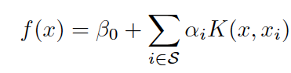
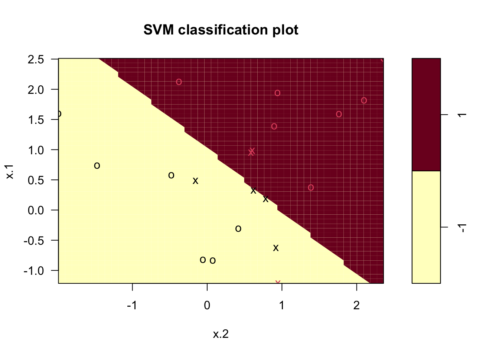

set.seed (1)
x <- matrix(rnorm (20 * 2), ncol = 2)
y <- c(rep(-1, 10), rep(1, 10))
x[y == 1, ] <- x[y == 1, ] + 1
plot(x, col = (3 - y))Chapter 9: Support Vector Machines
Here are three types of “Support Vector Machines.”
maximal margin classifier: cannot be applied to most datasets.
support vector classifier: an extension of the maximal margin classifier
Support Vector Machine: a further extension of the support vector classifier
Maximal Margin Classifier
In a p-dimensional space, a hyperplane is a flat affine subspace of dimension \(p-1\), defined as:
A heperplane can perfectly separate dataset into two classes, but such hyperplanes exist infinitely.
So we should choose the maximal margin hyperplane (optimal separating hyperplane) with the farthest minimum distance as margin.
The Maximal margin hyperplane is the solution to the optimizaiton problem:
The problem is that there are many cases with no separating hyperplane.
Support Vector Classifiers (Soft Margin Classifier)
It allows some observations to be on the incorrect side of the margin or the hyperplane.
It is the solution to the optimization problem:
where C is a non-negative tuning parameter, chosen via cross-validation.
\(\epsilon_1,…,\epsilon_n\) are slack variables.
The smaller C, the lower bias and the higher variance. The larger C, the higher bias and the lower variance.
Support Vector Machine
This support a non-linear decision boundary.
Some calculation, we find that the linear support vector classifier can be represented as
We replace the inner product with a generalized form:, called kernel.

For instance,
called a linear kernel, which gives the support vector classifier with a linear decision boundary.
is known as a polynomial kernel of degree d, which gives a non-linear decision boundary when d > 1.
Another popular choice is a radial kernel:
SVMs with More than Two Classes
One-Versus-One (all-pairs) Classification
This constructs \(\begin{pmatrix}k \\ 2\end{pmatrix}\) SVMs. The final classification is performed by assigning the test observation to the class to which it was most frequently assigned in these pairwise classifications.
One-Versus-All classification
- Fit K SVMs, each time comparing one of the K classes to the remaining K-1 classes.
- Estimate the parameters \(\beta_{0k}, \beta_{1k},…,\beta_{pk}\) from fitting an SVM comparing the Kth class.
- classify the test observations by \(\beta_{0k} + \beta_{1k} x_1 + … + \beta_{pk}x_p\) for each K, and pick the class with the largest value.
Lab
Support Vector Classifier
dat <- data.frame(x = x, y = as.factor(y))
library(e1071)
svmfit <- svm(y ~ ., data = dat , kernel = "linear", cost = 10, scale = FALSE)plot(svmfit , dat)
summary(svmfit)
Call:
svm(formula = y ~ ., data = dat, kernel = "linear", cost = 10, scale = FALSE)
Parameters:
SVM-Type: C-classification
SVM-Kernel: linear
cost: 10
Number of Support Vectors: 7
( 4 3 )
Number of Classes: 2
Levels:
-1 1svmfit <- svm(y ~ ., data = dat , kernel = "linear", cost = 0.1, scale = FALSE)
plot(svmfit , dat)
set.seed (1)
tune.out <- tune(svm , y ~ ., data = dat , kernel = "linear", ranges = list(cost = c(0.001 , 0.01, 0.1, 1, 5, 10, 100)))summary(tune.out)
Parameter tuning of 'svm':
- sampling method: 10-fold cross validation
- best parameters:
cost
0.1
- best performance: 0.05
- Detailed performance results:
cost error dispersion
1 1e-03 0.55 0.4377975
2 1e-02 0.55 0.4377975
3 1e-01 0.05 0.1581139
4 1e+00 0.15 0.2415229
5 5e+00 0.15 0.2415229
6 1e+01 0.15 0.2415229
7 1e+02 0.15 0.2415229bestmod <- tune.out$best.model
summary(bestmod)
Call:
best.tune(method = svm, train.x = y ~ ., data = dat, ranges = list(cost = c(0.001,
0.01, 0.1, 1, 5, 10, 100)), kernel = "linear")
Parameters:
SVM-Type: C-classification
SVM-Kernel: linear
cost: 0.1
Number of Support Vectors: 16
( 8 8 )
Number of Classes: 2
Levels:
-1 1xtest <- matrix(rnorm (20 * 2), ncol = 2)
ytest <- sample(c(-1, 1), 20, rep = TRUE)
xtest[ytest == 1, ] <- xtest[ytest == 1, ] + 1
testdat <- data.frame(x = xtest , y = as.factor(ytest))ypred <- predict(bestmod , testdat)
table(predict = ypred , truth = testdat$y) truth
predict -1 1
-1 9 1
1 2 8svmfit <- svm(y ~ ., data = dat , kernel = "linear", cost = .01, scale = FALSE)
ypred <- predict(svmfit , testdat)
table(predict = ypred , truth = testdat$y) truth
predict -1 1
-1 11 6
1 0 3x[y == 1, ] <- x[y == 1, ] + 0.5 # more separte the two classes
plot(x, col = (y + 5) / 2, pch = 19)dat <- data.frame(x = x, y = as.factor(y))
svmfit <- svm(y ~ ., data = dat , kernel = "linear", cost = 1e5)
summary(svmfit)
Call:
svm(formula = y ~ ., data = dat, kernel = "linear", cost = 1e+05)
Parameters:
SVM-Type: C-classification
SVM-Kernel: linear
cost: 1e+05
Number of Support Vectors: 3
( 1 2 )
Number of Classes: 2
Levels:
-1 1svmfit <- svm(y ~ ., data = dat , kernel = "linear", cost = 1)
summary(svmfit)
Call:
svm(formula = y ~ ., data = dat, kernel = "linear", cost = 1)
Parameters:
SVM-Type: C-classification
SVM-Kernel: linear
cost: 1
Number of Support Vectors: 7
( 4 3 )
Number of Classes: 2
Levels:
-1 1plot(svmfit , dat)SVM
set.seed (1)
x <- matrix(rnorm (200 * 2), ncol = 2)
x[1:100, ] <- x[1:100, ] + 2
x[101:150, ] <- x[101:150, ] - 2
y <- c(rep(1, 150) , rep(2, 50))
dat <- data.frame(x = x, y = as.factor(y))plot(x, col = y)train <- sample (200 , 100)
svmfit <- svm(y ~ ., data = dat[train , ], kernel = "radial", gamma = 1, cost = 1)
plot(svmfit , dat[train , ])summary(svmfit)
Call:
svm(formula = y ~ ., data = dat[train, ], kernel = "radial", gamma = 1,
cost = 1)
Parameters:
SVM-Type: C-classification
SVM-Kernel: radial
cost: 1
Number of Support Vectors: 31
( 16 15 )
Number of Classes: 2
Levels:
1 2svmfit <- svm(y ~ ., data = dat[train , ], kernel = "radial", gamma = 1, cost = 1e5)
plot(svmfit , dat[train , ])set.seed (1)
tune.out <- tune(svm , y ~ ., data = dat[train , ], kernel = "radial",
ranges = list(
cost = c(0.1 , 1, 10, 100, 1000) ,
gamma = c(0.5, 1, 2, 3, 4)
)
)
summary(tune.out)
Parameter tuning of 'svm':
- sampling method: 10-fold cross validation
- best parameters:
cost gamma
1 0.5
- best performance: 0.07
- Detailed performance results:
cost gamma error dispersion
1 1e-01 0.5 0.26 0.15776213
2 1e+00 0.5 0.07 0.08232726
3 1e+01 0.5 0.07 0.08232726
4 1e+02 0.5 0.14 0.15055453
5 1e+03 0.5 0.11 0.07378648
6 1e-01 1.0 0.22 0.16193277
7 1e+00 1.0 0.07 0.08232726
8 1e+01 1.0 0.09 0.07378648
9 1e+02 1.0 0.12 0.12292726
10 1e+03 1.0 0.11 0.11005049
11 1e-01 2.0 0.27 0.15670212
12 1e+00 2.0 0.07 0.08232726
13 1e+01 2.0 0.11 0.07378648
14 1e+02 2.0 0.12 0.13165612
15 1e+03 2.0 0.16 0.13498971
16 1e-01 3.0 0.27 0.15670212
17 1e+00 3.0 0.07 0.08232726
18 1e+01 3.0 0.08 0.07888106
19 1e+02 3.0 0.13 0.14181365
20 1e+03 3.0 0.15 0.13540064
21 1e-01 4.0 0.27 0.15670212
22 1e+00 4.0 0.07 0.08232726
23 1e+01 4.0 0.09 0.07378648
24 1e+02 4.0 0.13 0.14181365
25 1e+03 4.0 0.15 0.13540064
table(
true = dat[-train , "y"],
pred = predict(
tune.out$best.model , newdata = dat[-train , ]
)
) pred
true 1 2
1 67 10
2 2 21ROC Curves
library(ROCR)
rocplot <- function(pred , truth , ...) {
predob <- prediction(pred , truth)
perf <- performance(predob , "tpr", "fpr")
plot(perf , ...)
}By increasing \(\gamma\), we can produce a more flexible fit.
par(mfrow = c(1, 2))
svmfit.opt <- svm(y ~ ., data = dat[train , ], kernel = "radial", gamma = 2, cost = 1,
decision.values = T)
fitted <- attributes(
predict(svmfit.opt , dat[train , ], decision.values = TRUE)
)$decision.values
rocplot(-fitted, dat[train , "y"], main = "Training Data")
svmfit.flex <- svm(y ~ ., data = dat[train , ], kernel = "radial", gamma = 50, cost = 1,
decision.values = T)
fitted <- attributes(
predict(svmfit.flex , dat[train , ], decision.values = T)
)$decision.values
rocplot(-fitted , dat[train , "y"], add = T, col = "red")
fitted <- attributes(
predict(svmfit.opt , dat[-train , ], decision.values = T)
)$decision.values
rocplot(-fitted , dat[-train , "y"], main = "Test Data")
fitted <- attributes(
predict(svmfit.flex , dat[-train , ], decision.values = T)
)$decision.values
rocplot(-fitted , dat[-train , "y"], add = T, col = "red")SVM with Multiple Classes
set.seed (1)
x <- rbind(x, matrix(rnorm (50 * 2), ncol = 2))
y <- c(y, rep(0, 50))
x[y == 0, 2] <- x[y == 0, 2] + 2
dat <- data.frame(x = x, y = as.factor(y))
par(mfrow = c(1, 1))
plot(x, col = (y + 1))The svm function performs multi-class classification using the one-versus-one approach.
svmfit <- svm(y ~ ., data = dat , kernel = "radial", cost = 10, gamma = 1)
plot(svmfit , dat)E.g., Application to Gene Expression Data
library(ISLR2)
names(Khan)[1] "xtrain" "xtest" "ytrain" "ytest" table(Khan$ytrain)
1 2 3 4
8 23 12 20 table(Khan$ytest)
1 2 3 4
3 6 6 5 dat <- data.frame(
x = Khan$xtrain,
y = as.factor(Khan$ytrain)
)
out <- svm(y ~ ., data = dat , kernel = "linear", cost = 10)
summary(out)
Call:
svm(formula = y ~ ., data = dat, kernel = "linear", cost = 10)
Parameters:
SVM-Type: C-classification
SVM-Kernel: linear
cost: 10
Number of Support Vectors: 58
( 20 20 11 7 )
Number of Classes: 4
Levels:
1 2 3 4dat.te <- data.frame(
x = Khan$xtest,
y = as.factor(Khan$ytest))
pred.te <- predict(out , newdata = dat.te)
table(pred.te, dat.te$y)
pred.te 1 2 3 4
1 3 0 0 0
2 0 6 2 0
3 0 0 4 0
4 0 0 0 5